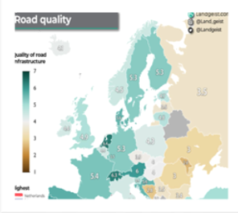

Utak:
Míg a magyar úthálózat egész elfogadható Budapest környékén, az utak minőségi még itt is kérdéses. Magyarország kereken 4 pontot ért el a 7-ből út minőségben, míg ez nem hangzik rosszul, az ilyen statisztikák sokszor csalóak. Budapesten és az Agglomerációban sokkal magasabb minőségűek és újabbak az utak, mint a falukban. Magyarországon az önkormányzatok által kezelt régiókban (többségük falu és község) 2022-ben 73% százalékuk földút volt a KSH szerint. Ez azért történik mert Budapest és környéke sokkal fontosabb, mint a kis faluk/községek, de akár nagyobb városokban is (Pl.: Érd) előfordulhatnak a földutak főleg, ha a város szélén járunk. 
Autópályák/Autóutak:
Magyarország autópályái/autóútjai is szörnyű állapotban vannak, míg nem mindegyik, a régebbi, vagy jobban megterhelt utak (Pl.: M0) tele van kátyúval, és akár befejezetlen útrészekkel. Ez lelassíthatja a már eleve lassú tömegközlekedést, hiszen a buszvezetőnek még a gödrök kerülésére is figyelni kell, és akár még defektet is kaphat. Ez a helyzet nyílvánvalóan a személyautókat is érinti, de ebben az esetben talán még rosszabb, hiszen egy nagyobb kátyú könnyen tönkreteheti egy kisebb gépjármű szerkezetét. Összességében a magyar utak sivár helyzetben vannak és még sok mindent kell fejleszteni rajta.